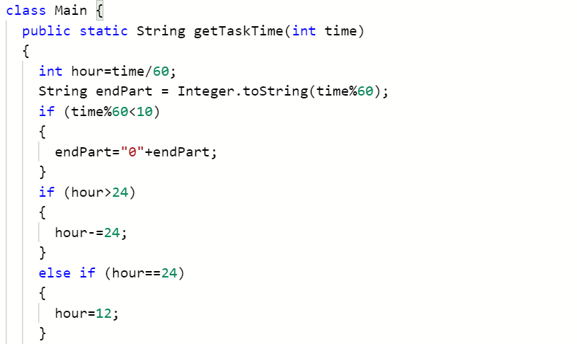
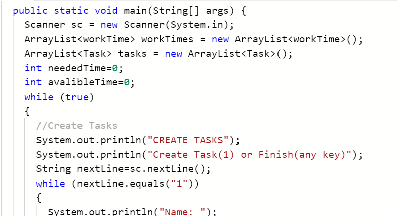
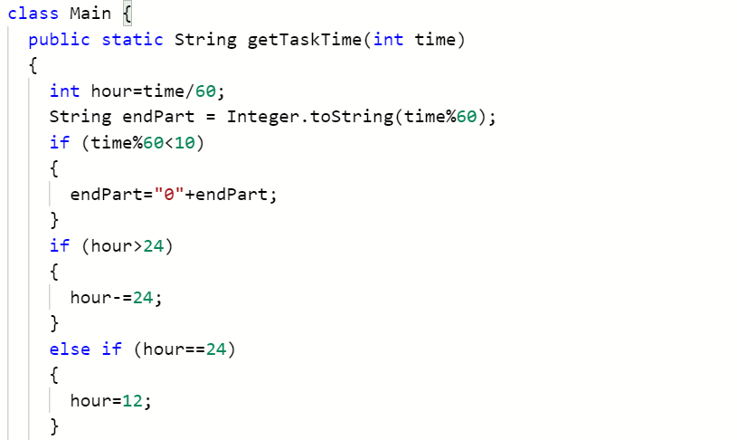
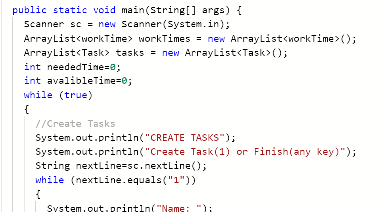
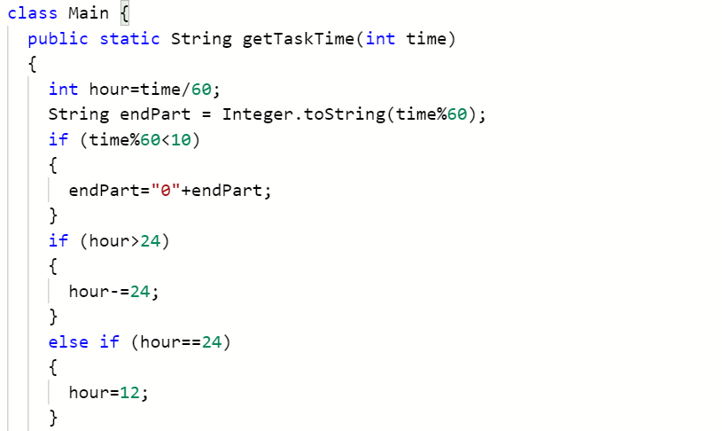
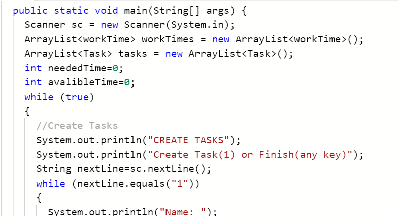

We offer four introductory courses in the computer science track: Scratch, Python, Java, and web development with HTML and CSS. Classes take a project-based learning approach as students will learn through collaborating and working with peers on mini-projects.
Our introductory Scratch course is generally recommended for younger students (grades 2-5) but we have a large range of students taking this class from K-8. Ideal for students who have no coding experience, this class will provide a strong foundation to simple programming logic through hands-on activites and games. Through interactive group work, students engage in team problem-solving, developing skills in both collaboration and comuter science. This course will go in depth to all the Scratch functions and will equip students with the skills necessary to make projects on their own. Key projects in this course include a guess my number game (with sensing), a maze game, choose your own adventure game.
Module 1: Scratch environment (website overview)
Module 2: Motion (coordinate plane overview)
Module 3: Looks and Sounds Complete Overview
Module 4: Loops
Module 5: Conditionals with Sensing
Module 6: Conditionals with Operators
Module 7: String Manipulation from User Input
Module 8 : Variables
Module 9: Clones and Broadcasting
Module 10: Blocks
Ana, Grade 3
Emma and Jacob, Grade 2
Hee-Seo, Grade 4
Python I
Our introductory Python course is recommended for highly motivated 6-8th graders (or younger students with high math ability), or students with sufficient programming background in Scratch. The course will cover the fundamentals of Python and will serve as an introduction to text-based languages. Through project-based learning, students learn valuable programming skills by working on mini-projects, often collaborating with students in their class. These projects serve the purpose of developing skills in programming logic, including understanding of common algorithms like "finding the largest number" and "summing all numbers in a list". Projects in this course include hangman, tic-tac-toe, rock-paper-scissors, and a shopping game.
Module 1: Introduction to Python
Module 2: Variables and Data Types
Module 3: If-Else Statements
Module 4: String Methods
Module 5: Functions
Module 6: While Loops
Module 7: For Loops
Module 8: Lists
Module 9: 2D Arrays and Nested Iteration
Module 10: Dictionaries
Module 11: Introduction to Python Libraries
Liam, Grade 6
Adam, Grade 8
Python II
Our Python II course is recommended for highly driven 6-8 graders with a robust understanding of the basics of Python (which can be achieved by taking Python I). The course will utilize the skills taught in the introductory Python course to cover different applications of Python. Through project-based learning, students will dive deeper into Python programming by working on projects, and collaborating with students in their class. These projects will help build a robust base for future exploration of Python application, such as Object-oriented Programming, more complex algorithms, APIs, and Data Science.
Module 1: Introduction/Review of Python 1
Module 2: Object-oriented Programming
Module 3: If-Else Statements
Module 3: Algorithms
Module 4: APIs
Module 5: Data Science
Module 6: Final Project
Java
Our introductory Java course is recommended for students in grades 6-8 with previous text-based programming experience and/or a very strong foundation in math through operations with decimals, fractions, and negative numbers. The course provides students with a strong foundation in one of the most common programming languages used today. It approaches Java from a functional programming perspective, giving students a true understanding of how the internal structures of Java function. Through projects and games like Mastermind as well as thorough coverage of foundational computer science topics such as data structures and algorithms, this course will set students well on their way to becoming skilled Java developers.
Module 1: Data Definitions
Module 2: Classes
Module 3: Interfaces
Module 4: Methods
Module 5: Lists
Module 6: Recursion
Module 7: Abstract Classes
Module 8: Array Lists
Module 9: Loops
Module 10: Searching
Module 11: Sorting
Module 12: Arrays
Yuen Kai, Grade 8


Web development
Our introductory Web Development course is recommended for students in grades 6-8 (or younger students with high math ability) who are interested in the design and functionality aspects of programming. The course will cover the fundamentals of website development using vanilla HTML, CSS, and JavaScript. Students will explore the various tools, vocabulary, and components used in the field and learn how each element functions together to create a fully-functional web application. Through creating their own landing pages, photography sites, and personal portfolios, using the skills taught, students will equip all the skills necessary to make further projects on their own.
.png)
.png)
.png)

.png) 


